library(daymetr)
library(tidyverse)Data Basics
Reading the climate record of Yale-Myers Forest
Yale-Myers Forest is a 7,840 acre research forest in northeastern Connecticut. It is a hub for education, research, and harvesting operations within the Yale Forest School system. The forest primarily consists of mixed hardwoods on glacial till soils, with hemlock, scattered white pine stands from old field origins, and red pine plantations established in the 1940s.
In this workshop, we will use daily climate data to ask a more interesting question:
Has Yale-Myers Forest become warmer, wetter, or more climatically stressful since 1990?
By the end of the workshop, you will have built a small climate evidence brief for Yale-Myers Forest. Along the way, you will learn to:
- Download climate data with
daymetr. - Manipulate data with
tidyverse:- Format date elements.
- Use
select()to choose variables from a data frame. - Use
filter()to choose data based on values. - Use
mutate()to create new variables. - Use
reframe()to summarize datasets. - Use
full_join()to merge datasets.
- Visualize data with
ggplot2. - Write basic functions that make your analysis easier to reuse.
Data manipulation with tidyverse
Load the required libraries
Download daily climate data
To explore Yale-Myers Forest, download daily Daymet data for 1990-2018 at latitude 41.952909 and longitude -72.123859.
Review the arguments for the download_daymet() function:
?download_daymet()Download the data:
yale_myers_daymet <- download_daymet(lat = 41.952909,
lon = -72.123859,
start = 1990,
end = 2018)Downloading DAYMET data for: Daymet at 41.952909/-72.123859 latitude/longitude !Done !You now have a nested list that includes site information and daily climate data. The daily climate data are stored in the data element of the list. Pull the data out and convert it to a data frame:
yale_myers <- as.data.frame(yale_myers_daymet$data)Look at the data:
head(yale_myers) year yday dayl..s. prcp..mm.day. srad..W.m.2. swe..kg.m.2. tmax..deg.c.
1 1990 1 32422.37 0.00 179.64 15.20 5.15
2 1990 2 32467.03 0.00 200.25 14.94 3.11
3 1990 3 32515.34 0.00 242.26 14.37 7.38
4 1990 4 32567.27 2.22 184.50 13.49 8.79
5 1990 5 32622.77 0.00 194.86 12.06 5.58
6 1990 6 32681.80 0.00 218.59 11.97 3.72
tmin..deg.c. vp..Pa.
1 -2.31 515.41
2 -5.39 408.97
3 -4.64 432.86
4 -3.91 457.55
5 -2.59 504.75
6 -5.77 397.13summary(yale_myers) year yday dayl..s. prcp..mm.day.
Min. :1990 Min. : 1 Min. :32180 Min. : 0.000
1st Qu.:1997 1st Qu.: 92 1st Qu.:35763 1st Qu.: 0.000
Median :2004 Median :183 Median :43200 Median : 0.000
Mean :2004 Mean :183 Mean :43200 Mean : 3.726
3rd Qu.:2011 3rd Qu.:274 3rd Qu.:50638 3rd Qu.: 3.560
Max. :2018 Max. :365 Max. :54220 Max. :110.330
srad..W.m.2. swe..kg.m.2. tmax..deg.c. tmin..deg.c.
Min. : 38.95 Min. : 0.00 Min. :-13.53 Min. :-25.980
1st Qu.:210.89 1st Qu.: 0.00 1st Qu.: 6.07 1st Qu.: -3.330
Median :306.97 Median : 0.00 Median : 15.14 Median : 3.490
Mean :313.20 Mean : 26.99 Mean : 14.48 Mean : 3.555
3rd Qu.:414.61 3rd Qu.: 35.57 3rd Qu.: 23.54 3rd Qu.: 11.820
Max. :678.41 Max. :245.38 Max. : 35.51 Max. : 22.950
vp..Pa.
Min. : 73.32
1st Qu.: 477.75
Median : 783.27
Mean : 945.93
3rd Qu.:1382.58
Max. :2800.24 Turn daily records into a usable climate timeline
Daymet stores time as year and day of year (yday). We need one actual date column before we can summarize the data by month, season, or year.
Step 1. Use the year and day of year to create a date:
yale_myers$year_day <- paste(yale_myers$year, yale_myers$yday, sep = "-") %>%
as.Date(format = "%Y-%j")Look at your work:
head(yale_myers$year_day)[1] "1990-01-01" "1990-01-02" "1990-01-03" "1990-01-04" "1990-01-05"
[6] "1990-01-06"Step 2. Format the date as YYYY-mm-dd:
yale_myers$date <- format(yale_myers$year_day, "%Y-%m-%d") %>%
as.Date()Check the result:
head(yale_myers$date)[1] "1990-01-01" "1990-01-02" "1990-01-03" "1990-01-04" "1990-01-05"
[6] "1990-01-06"class(yale_myers$date)[1] "Date"Create climate variables with mutate()
The function mutate() creates new columns from existing columns. We will create several columns that help us interpret the climate record:
month: the calendar month.month_name: the month name, used for plotting.season: a rough ecological season.julian_day: the day of year.tmean: mean daily temperature.hot_day: days with maximum temperature at or above 30 degrees C.freeze_day: days with minimum temperature at or below 0 degrees C.growing_season: May through September.
yale_myers <- yale_myers %>%
mutate(month = format(date, format = "%m"),
month_name = factor(month.abb[as.numeric(month)], levels = month.abb),
julian_day = format(date, format = "%j"),
season = case_when(
month %in% c("12", "01", "02") ~ "Winter",
month %in% c("03", "04", "05") ~ "Spring",
month %in% c("06", "07", "08") ~ "Summer",
month %in% c("09", "10", "11") ~ "Fall"
),
tmean = (0.606 * as.numeric(tmax..deg.c.)) +
(0.394 * as.numeric(tmin..deg.c.)),
hot_day = tmax..deg.c. >= 30,
freeze_day = tmin..deg.c. <= 0,
growing_season = month %in% c("05", "06", "07", "08", "09"))Look at the new variables:
yale_myers %>%
select(date, month, month_name, season, tmean, hot_day, freeze_day, growing_season) %>%
head() date month month_name season tmean hot_day freeze_day growing_season
1 1990-01-01 01 Jan Winter 2.21076 FALSE TRUE FALSE
2 1990-01-02 01 Jan Winter -0.23900 FALSE TRUE FALSE
3 1990-01-03 01 Jan Winter 2.64412 FALSE TRUE FALSE
4 1990-01-04 01 Jan Winter 3.78620 FALSE TRUE FALSE
5 1990-01-05 01 Jan Winter 2.36102 FALSE TRUE FALSE
6 1990-01-06 01 Jan Winter -0.01906 FALSE TRUE FALSERename columns
Use rename() to give the Daymet columns shorter names:
yale_myers_rn <- yale_myers %>%
rename(tmax = tmax..deg.c.,
tmin = tmin..deg.c.,
prcp = prcp..mm.day.)Look at your work:
head(yale_myers_rn) year yday dayl..s. prcp srad..W.m.2. swe..kg.m.2. tmax tmin vp..Pa.
1 1990 1 32422.37 0.00 179.64 15.20 5.15 -2.31 515.41
2 1990 2 32467.03 0.00 200.25 14.94 3.11 -5.39 408.97
3 1990 3 32515.34 0.00 242.26 14.37 7.38 -4.64 432.86
4 1990 4 32567.27 2.22 184.50 13.49 8.79 -3.91 457.55
5 1990 5 32622.77 0.00 194.86 12.06 5.58 -2.59 504.75
6 1990 6 32681.80 0.00 218.59 11.97 3.72 -5.77 397.13
year_day date month month_name julian_day season tmean hot_day
1 1990-01-01 1990-01-01 01 Jan 001 Winter 2.21076 FALSE
2 1990-01-02 1990-01-02 01 Jan 002 Winter -0.23900 FALSE
3 1990-01-03 1990-01-03 01 Jan 003 Winter 2.64412 FALSE
4 1990-01-04 1990-01-04 01 Jan 004 Winter 3.78620 FALSE
5 1990-01-05 1990-01-05 01 Jan 005 Winter 2.36102 FALSE
6 1990-01-06 1990-01-06 01 Jan 006 Winter -0.01906 FALSE
freeze_day growing_season
1 TRUE FALSE
2 TRUE FALSE
3 TRUE FALSE
4 TRUE FALSE
5 TRUE FALSE
6 TRUE FALSESelect the variables needed for the investigation
Subset the dataset to keep only the variables we need:
yale_myers_sub <- yale_myers_rn %>%
select(date, month, month_name, season, year, julian_day,
tmax, tmin, tmean, prcp, hot_day, freeze_day, growing_season)Look at your work:
head(yale_myers_sub) date month month_name season year julian_day tmax tmin tmean prcp
1 1990-01-01 01 Jan Winter 1990 001 5.15 -2.31 2.21076 0.00
2 1990-01-02 01 Jan Winter 1990 002 3.11 -5.39 -0.23900 0.00
3 1990-01-03 01 Jan Winter 1990 003 7.38 -4.64 2.64412 0.00
4 1990-01-04 01 Jan Winter 1990 004 8.79 -3.91 3.78620 2.22
5 1990-01-05 01 Jan Winter 1990 005 5.58 -2.59 2.36102 0.00
6 1990-01-06 01 Jan Winter 1990 006 3.72 -5.77 -0.01906 0.00
hot_day freeze_day growing_season
1 FALSE TRUE FALSE
2 FALSE TRUE FALSE
3 FALSE TRUE FALSE
4 FALSE TRUE FALSE
5 FALSE TRUE FALSE
6 FALSE TRUE FALSESummarize climate conditions with reframe()
Create an annual climate summary. Each row is one year of evidence:
yale_myers_annual <- yale_myers_sub %>%
reframe(.by = year,
tmax = max(tmax, na.rm = TRUE),
tmin = min(tmin, na.rm = TRUE),
tmean = mean(tmean, na.rm = TRUE),
prcp = sum(prcp, na.rm = TRUE),
hot_days = sum(hot_day, na.rm = TRUE),
freeze_days = sum(freeze_day, na.rm = TRUE),
wettest_day = max(prcp, na.rm = TRUE))Look at your work:
head(yale_myers_annual) year tmax tmin tmean prcp hot_days freeze_days wettest_day
1 1990 32.41 -19.73 10.941330 1419.35 8 131 1419.35
2 1991 35.03 -19.81 10.719331 1492.94 11 133 1492.94
3 1992 32.78 -19.33 8.836160 1390.22 3 161 1390.22
4 1993 33.02 -21.59 9.429097 1251.88 10 147 1251.88
5 1994 32.66 -24.70 9.720943 1306.84 10 141 1306.84
6 1995 34.60 -21.21 9.689669 1263.50 16 142 1263.50Determine average monthly conditions. This gives us the seasonal climate fingerprint of Yale-Myers Forest:
yale_myers_monthly <- yale_myers_sub %>%
reframe(.by = c(month, month_name),
tmax = max(tmax, na.rm = TRUE),
tmin = min(tmin, na.rm = TRUE),
tmean = mean(tmean, na.rm = TRUE),
prcp = sum(prcp, na.rm = TRUE) / length(unique(year)),
hot_days = sum(hot_day, na.rm = TRUE) / length(unique(year)),
freeze_days = sum(freeze_day, na.rm = TRUE) / length(unique(year))) %>%
arrange(month)Look at your work:
head(yale_myers_monthly) month month_name tmax tmin tmean prcp hot_days freeze_days
1 01 Jan 18.95 -24.70 -2.740226 102.8438 0.0000000 28.8620690
2 02 Feb 20.75 -25.98 -1.620468 94.5469 0.0000000 26.6206897
3 03 Mar 28.78 -20.39 2.739755 127.2134 0.0000000 24.7931034
4 04 Apr 33.76 -9.78 9.184644 114.5007 0.2068966 10.1379310
5 05 May 33.55 -2.08 15.002559 108.8931 0.8275862 0.5172414
6 06 Jun 34.28 3.22 19.647075 116.0659 2.1724138 0.0000000Determine average conditions by both year and month:
yale_myers_yearmon <- yale_myers_sub %>%
reframe(.by = c(year, month, month_name),
tmax = max(tmax, na.rm = TRUE),
tmin = min(tmin, na.rm = TRUE),
tmean = mean(tmean, na.rm = TRUE),
prcp = sum(prcp, na.rm = TRUE),
hot_days = sum(hot_day, na.rm = TRUE),
freeze_days = sum(freeze_day, na.rm = TRUE)) %>%
arrange(year, month)Look at your work:
head(yale_myers_yearmon) year month month_name tmax tmin tmean prcp hot_days freeze_days
1 1990 01 Jan 15.63 -9.41 1.22571871 124.95 0 29
2 1990 02 Feb 16.24 -19.73 0.09135071 119.02 0 26
3 1990 03 Mar 27.23 -17.71 4.16228645 63.76 0 20
4 1990 04 Apr 32.41 -5.48 8.59659000 156.66 2 9
5 1990 05 May 24.44 1.07 12.77852903 209.07 0 0
6 1990 06 Jun 28.55 4.62 19.91868733 59.14 0 0Summarize growing season conditions by year:
yale_myers_growing <- yale_myers_sub %>%
filter(growing_season) %>%
reframe(.by = year,
growing_tmean = mean(tmean, na.rm = TRUE),
growing_prcp = sum(prcp, na.rm = TRUE),
growing_hot_days = sum(hot_day, na.rm = TRUE))Look at your work:
head(yale_myers_growing) year growing_tmean growing_prcp growing_hot_days
1 1990 18.65817 559.96 6
2 1991 19.55456 770.70 11
3 1992 17.82292 564.21 3
4 1993 19.21965 458.78 10
5 1994 19.17603 627.23 10
6 1995 18.86257 403.15 16Select a file for later comparison
Subset mean annual temperature and year from the annual summary. Then rename tmean to yale_myers:
yale_myers_annual_tmean <- yale_myers_annual %>%
mutate(yale_myers = tmean) %>%
select(year, yale_myers)Look at your work:
head(yale_myers_annual_tmean) year yale_myers
1 1990 10.941330
2 1991 10.719331
3 1992 8.836160
4 1993 9.429097
5 1994 9.720943
6 1995 9.689669Save your work
Save the three files yale_myers, yale_myers_sub, and yale_myers_annual_tmean in a .RDATA object. You will need this for the post-workshop assessment:
save(yale_myers, yale_myers_sub, yale_myers_annual_tmean,
file = "data/products/data_basics.RDATA")Introduction to ggplot2
ggplot2 is a plotting package in R. Graphics are built layer by layer. In this workshop, each plot should help answer part of the climate question instead of simply demonstrating a plotting command.
Load the library:
library(ggplot2)Building blocks of the grammar of graphics
- Data: the dataset.
- Aesthetics: how variables map to visual features such as x-axis, y-axis, color, fill, size, labels, alpha, shape, line width, and line type.
- Geometrics: how the data are displayed, such as points, lines, histograms, bars, or boxplots.
- Facets: split the data into subsets.
- Statistics: binning, smoothing, summaries, or model fits.
- Coordinates: the space between data and display.
- Themes: non-data visual elements.
Data layer
We first define the source of the information to be visualized:
ggplot(data = yale_myers_annual) +
labs(title = "Annual climate record of Yale-Myers Forest")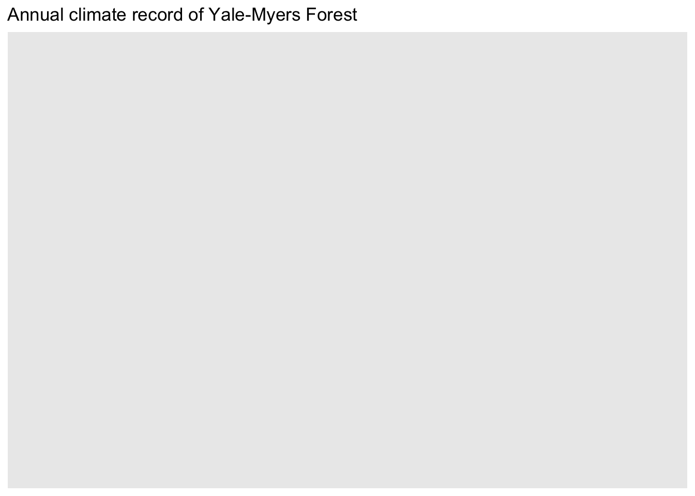
Aesthetic layer
The aesthetic layer maps variables to visual features. Here, year is mapped to the x-axis and annual mean temperature is mapped to the y-axis:
ggplot(data = yale_myers_annual,
aes(x = year, y = tmean)) +
labs(title = "Annual mean temperature at Yale-Myers Forest")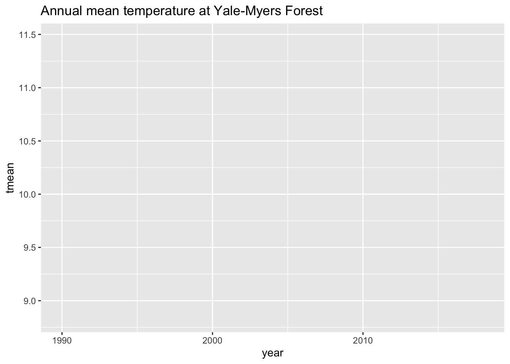
Geometric layer
The geometric layer controls how the data are drawn:
ggplot(data = yale_myers_annual,
aes(x = year, y = tmean)) +
geom_point() +
geom_line() +
labs(title = "Annual mean temperature at Yale-Myers Forest",
x = "Year",
y = "Mean air temperature (degrees C)")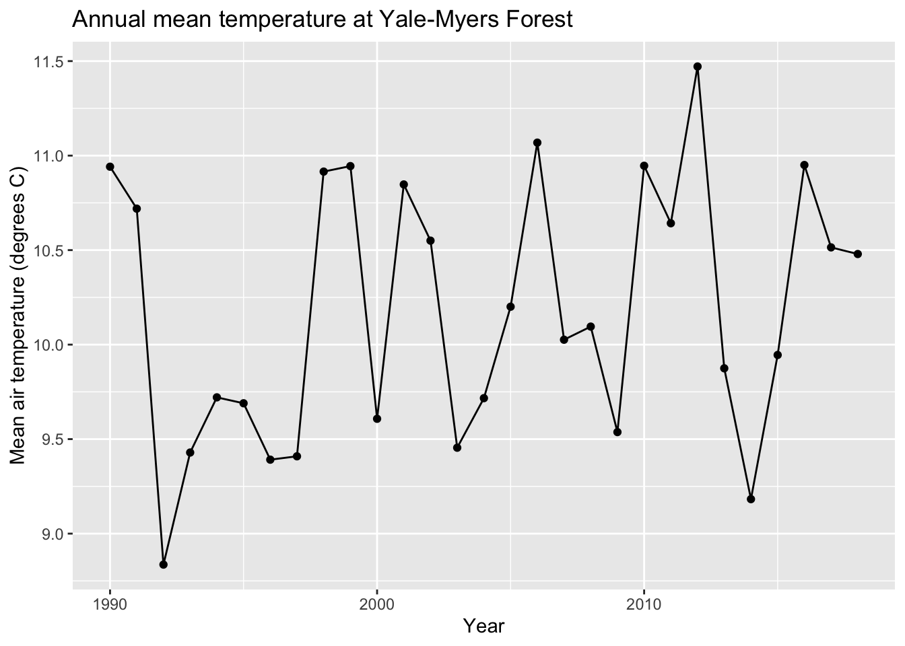
Add size and color to show whether warmer years also had more hot days:
ggplot(data = yale_myers_annual,
aes(x = year, y = tmean, size = hot_days, color = hot_days)) +
geom_point() +
labs(title = "Warm years and hot days at Yale-Myers Forest",
x = "Year",
y = "Mean air temperature (degrees C)",
size = "Hot days",
color = "Hot days")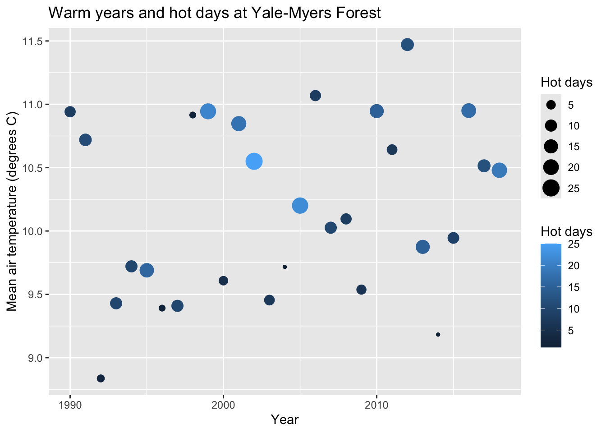
Create a histogram to see the distribution of daily mean temperature:
ggplot(data = yale_myers_sub,
aes(x = tmean)) +
geom_histogram(binwidth = 5) +
labs(title = "Distribution of daily mean temperature",
x = "Daily mean air temperature (degrees C)",
y = "Count")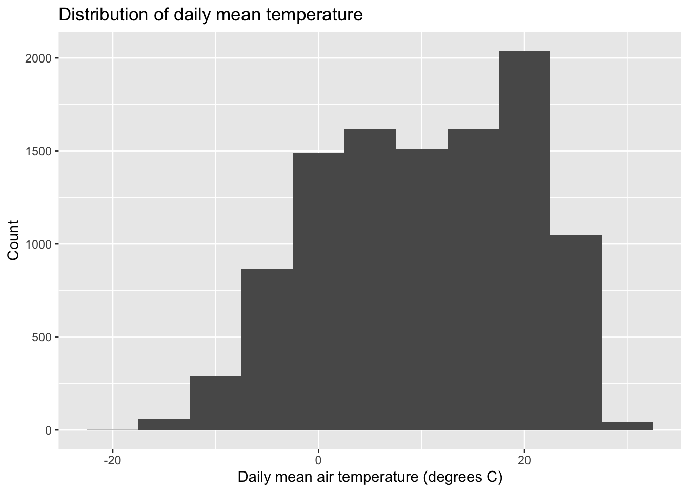
Seasonal climate fingerprint
Use the monthly summary to see the shape of a typical year:
ggplot(data = yale_myers_monthly,
aes(x = month_name, y = tmean, group = 1)) +
geom_line() +
geom_point() +
labs(title = "Seasonal temperature pattern at Yale-Myers Forest",
x = "Month",
y = "Mean air temperature (degrees C)")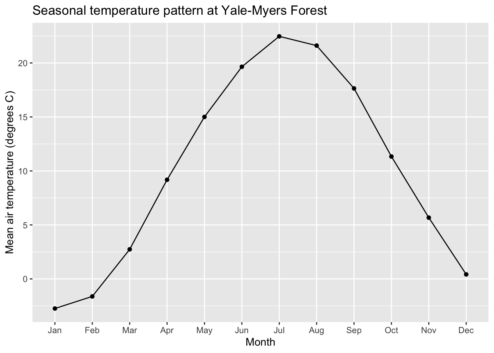
Now look at precipitation:
ggplot(data = yale_myers_monthly,
aes(x = month_name, y = prcp)) +
geom_col() +
labs(title = "Average monthly precipitation at Yale-Myers Forest",
x = "Month",
y = "Average monthly precipitation (mm)")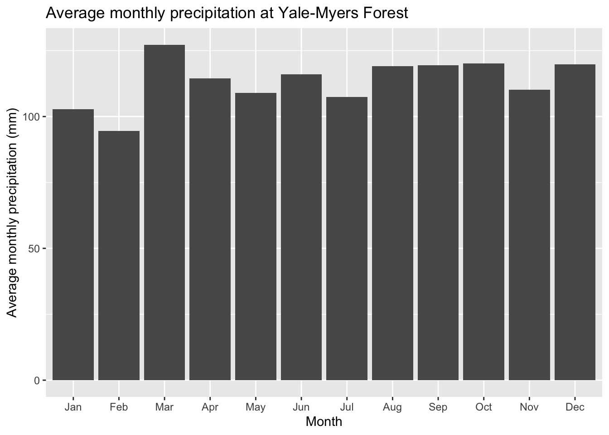
Facet layer
The facet layer splits the data into subsets. Here we compare fall months, which are often important for field work and forest management:
yale_myers_fall <- yale_myers_sub %>%
filter(month > "08" & month < "12")
p <- ggplot(data = yale_myers_fall,
aes(x = date, y = tmean)) +
geom_point()
p + facet_grid(month_name ~ .) +
labs(title = "Fall temperature records at Yale-Myers Forest",
x = "Date",
y = "Mean air temperature (degrees C)")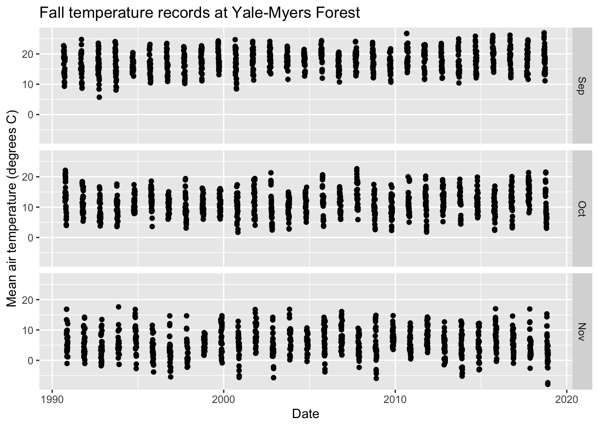
Statistics layer
We can add a model fit to ask whether a seasonal climate variable is changing over time. Here we explore February temperatures from 1990-2018:
yale_myers_feb <- yale_myers_sub %>%
filter(month == "02")
ggplot(data = yale_myers_feb,
aes(x = date, y = tmean)) +
geom_point() +
stat_smooth(method = lm, col = "red") +
labs(title = "Are February temperatures changing at Yale-Myers Forest?",
x = "Date",
y = "Mean air temperature (degrees C)")`geom_smooth()` using formula = 'y ~ x'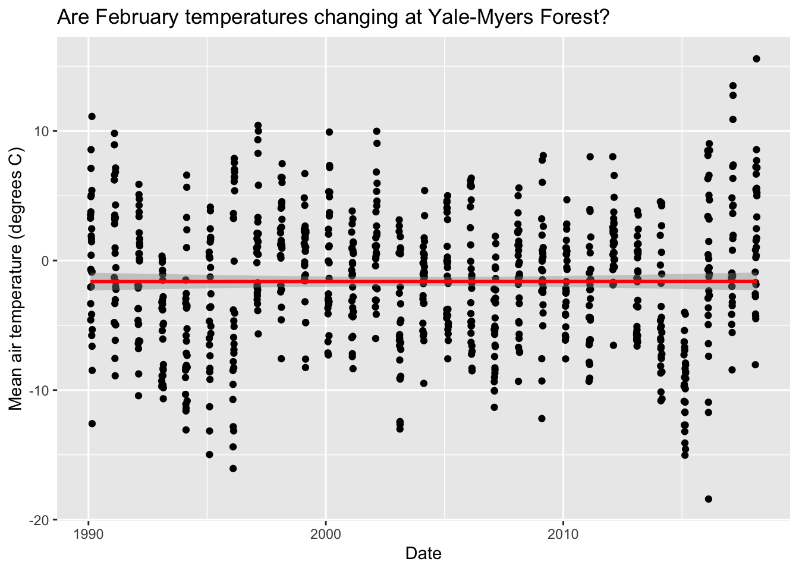
Use the annual summary to ask whether hot days are changing:
ggplot(data = yale_myers_annual,
aes(x = year, y = hot_days)) +
geom_col() +
stat_smooth(method = lm, se = FALSE, col = "red") +
labs(title = "Annual number of hot days at Yale-Myers Forest",
x = "Year",
y = "Number of days with tmax >= 30 degrees C")`geom_smooth()` using formula = 'y ~ x'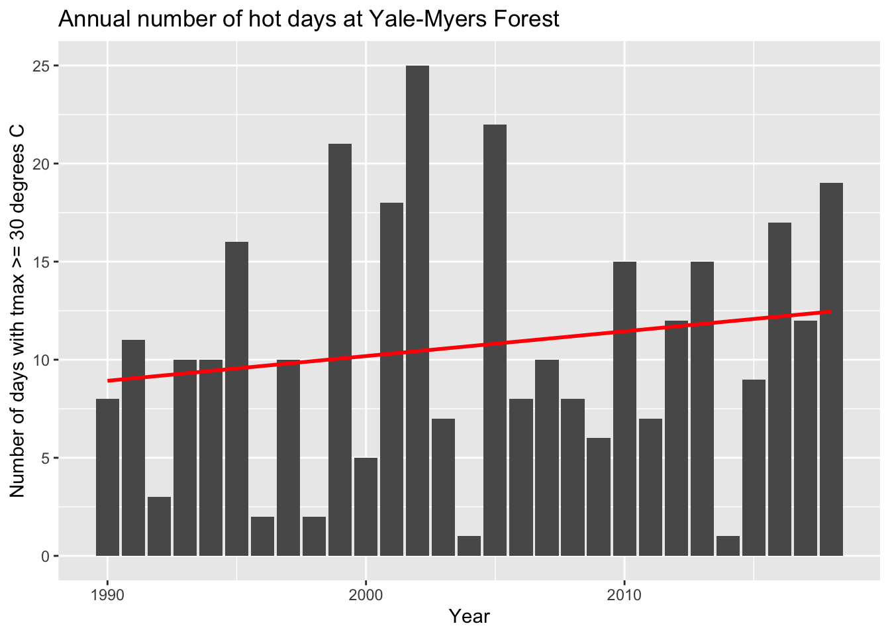
Coordinates layer
Coordinates control the plotted space. First, plot fall minimum temperature against mean temperature:
ggplot(data = yale_myers_fall,
aes(x = tmin, y = tmean)) +
geom_point() +
stat_smooth(method = lm, col = "red") +
scale_y_continuous(limits = c(-10, 40), expand = c(0, 0)) +
scale_x_continuous(limits = c(-10, 40), expand = c(0, 0)) +
coord_equal() +
labs(title = "Fall minimum and mean temperature",
x = "Minimum air temperature (degrees C)",
y = "Mean air temperature (degrees C)")`geom_smooth()` using formula = 'y ~ x'Warning: Removed 13 rows containing non-finite outside the scale range
(`stat_smooth()`).Warning: Removed 13 rows containing missing values or values outside the scale range
(`geom_point()`).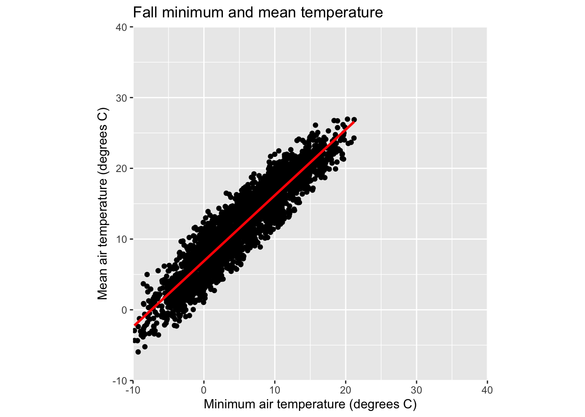
Use coord_cartesian() to zoom without deleting data outside the visible range:
ggplot(data = yale_myers_fall,
aes(x = tmin, y = tmean)) +
geom_point() +
stat_smooth(method = lm, col = "red") +
labs(title = "Zoomed view of fall temperature relationships",
x = "Minimum air temperature (degrees C)",
y = "Mean air temperature (degrees C)") +
coord_cartesian(xlim = c(-10, 10))`geom_smooth()` using formula = 'y ~ x'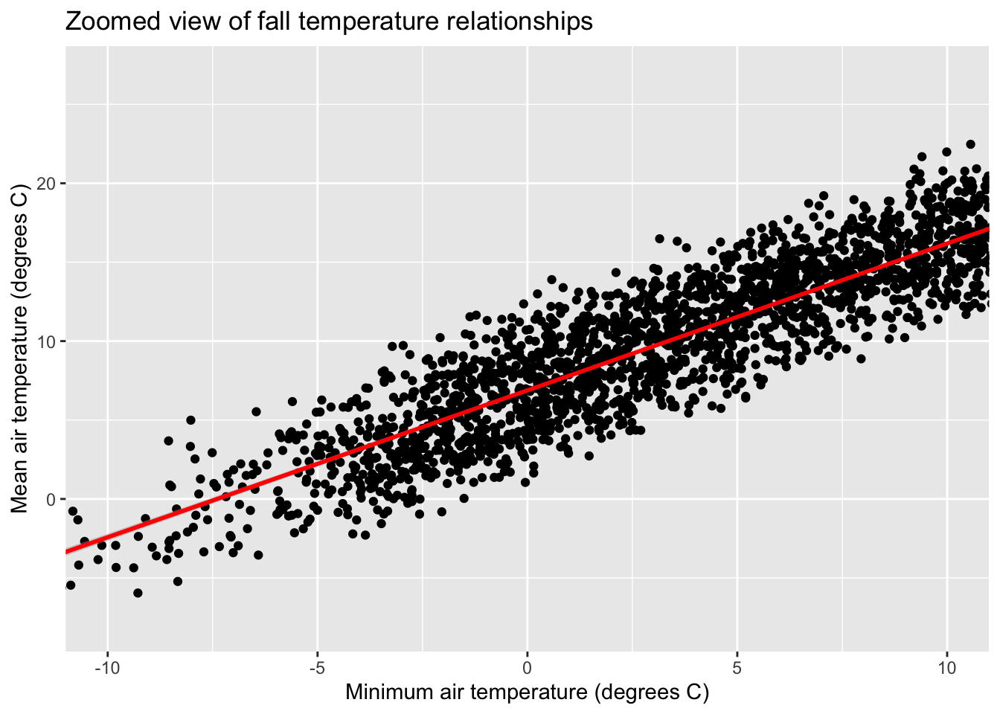
Theme layer
The theme layer controls the finer points of display, such as font size, background color, and grid lines:
ggplot(data = yale_myers_fall,
aes(x = tmin, y = tmean)) +
geom_point() +
stat_smooth(method = lm, col = "red") +
facet_grid(. ~ month_name) +
theme(plot.background = element_rect(fill = "lightblue", colour = "gray")) +
labs(title = "Fall temperature relationships by month",
x = "Minimum air temperature (degrees C)",
y = "Mean air temperature (degrees C)")`geom_smooth()` using formula = 'y ~ x'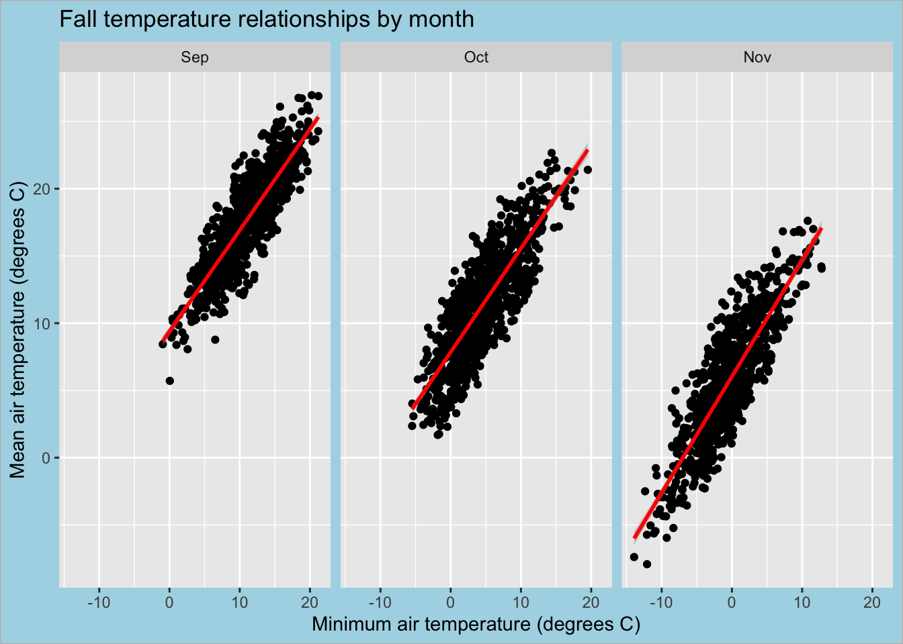
Comparing Yale-Myers Forest to New Haven
Yale-Myers Forest is inland and forested. New Haven is coastal and urban. Comparing the two locations gives full_join() a purpose: we can ask whether the same years were warm at both locations.
Download Daymet data for New Haven:
new_haven_daymet <- download_daymet(lat = 41.3083,
lon = -72.9279,
start = 1990,
end = 2018)Downloading DAYMET data for: Daymet at 41.3083/-72.9279 latitude/longitude !Done !new_haven <- as.data.frame(new_haven_daymet$data)Prepare the New Haven data using the same steps:
new_haven_sub <- new_haven %>%
mutate(date = paste(year, yday, sep = "-") %>%
as.Date(format = "%Y-%j"),
month = format(date, format = "%m"),
tmean = (0.606 * as.numeric(tmax..deg.c.)) +
(0.394 * as.numeric(tmin..deg.c.))) %>%
rename(tmax = tmax..deg.c.,
tmin = tmin..deg.c.,
prcp = prcp..mm.day.) %>%
select(date, month, year, tmax, tmin, tmean, prcp)Create a mean annual temperature summary for New Haven:
new_haven_annual_tmean <- new_haven_sub %>%
reframe(.by = year,
new_haven = mean(tmean, na.rm = TRUE))Use full_join() to combine the annual temperature summaries:
annual_tmean_compare <- yale_myers_annual_tmean %>%
full_join(new_haven_annual_tmean, by = "year")Look at the joined data:
head(annual_tmean_compare) year yale_myers new_haven
1 1990 10.941330 13.55682
2 1991 10.719331 13.35745
3 1992 8.836160 11.43059
4 1993 9.429097 11.84762
5 1994 9.720943 11.90046
6 1995 9.689669 11.89569Visualize the comparison:
annual_tmean_compare_long <- annual_tmean_compare %>%
pivot_longer(cols = c(yale_myers, new_haven),
names_to = "location",
values_to = "tmean")
ggplot(data = annual_tmean_compare_long,
aes(x = year, y = tmean, color = location)) +
geom_line() +
geom_point() +
labs(title = "Annual mean temperature comparison",
x = "Year",
y = "Mean air temperature (degrees C)",
color = "Location")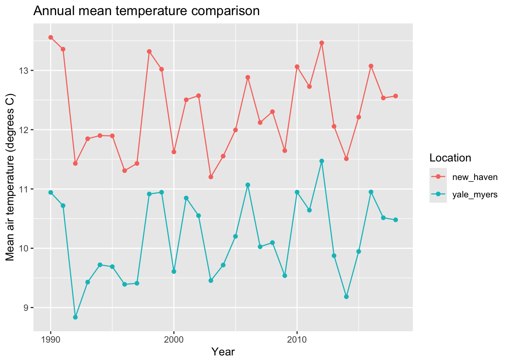
Introduction to writing functions in R
Functions are reusable sets of instructions. They help you avoid repeating code and make your analysis easier to check. In environmental data science, functions are especially useful when you need to apply the same summary to multiple locations, variables, or time periods.
What is a function?
In R, a function is an object that performs a task. R comes with built-in functions, such as:
min(),max(),mean(), andmedian().sum().range().str().print().length().sort().
You can also create your own functions. The basic syntax is:
function_name <- function(parameters) {
# code to run goes here
}Write a standard error function
The standard error measures the precision of an estimated mean. We will use this function in the assignment:
standard_error <- function(x) {
sd(x, na.rm = TRUE) / sqrt(sum(!is.na(x)))
}Test the function:
standard_error(yale_myers_sub$tmean)[1] 0.09504815Write a reusable monthly climate summary
Now write a function that summarizes monthly climate conditions for any Daymet-style data frame that already has month, tmean, prcp, tmin, and tmax columns:
summarize_monthly_climate <- function(data) {
data %>%
reframe(.by = month,
tmean = mean(tmean, na.rm = TRUE),
tmean_se = standard_error(tmean),
prcp = mean(prcp, na.rm = TRUE),
prcp_se = standard_error(prcp),
tmin = mean(tmin, na.rm = TRUE),
tmin_se = standard_error(tmin),
tmax = mean(tmax, na.rm = TRUE),
tmax_se = standard_error(tmax)) %>%
arrange(month)
}Use the function on both locations:
yale_myers_monthly_summary <- summarize_monthly_climate(yale_myers_sub)
new_haven_monthly_summary <- summarize_monthly_climate(new_haven_sub)Add location labels and combine the data:
monthly_location_compare <- bind_rows(
yale_myers_monthly_summary %>% mutate(location = "Yale-Myers Forest"),
new_haven_monthly_summary %>% mutate(location = "New Haven")
)Plot monthly mean temperature with standard error:
ggplot(data = monthly_location_compare,
aes(x = month, y = tmean, color = location, group = location)) +
geom_line() +
geom_point() +
geom_errorbar(aes(ymin = tmean - tmean_se,
ymax = tmean + tmean_se),
width = 0.2) +
labs(title = "Monthly mean temperature with standard error",
x = "Month",
y = "Mean air temperature (degrees C)",
color = "Location")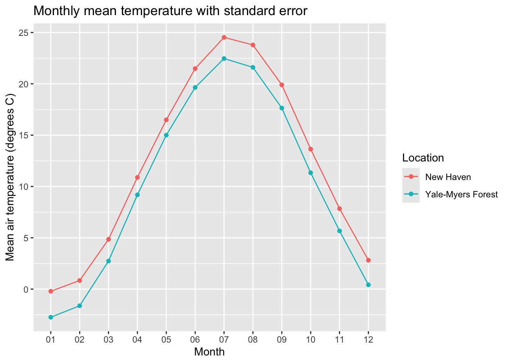
Function arguments by position and by name
Function arguments can be passed by position:
subtract_two_nums <- function(x, y) {
x - y
}
print(subtract_two_nums(3, 1))[1] 2Or by name:
print(subtract_two_nums(x = 3, y = 1))[1] 2print(subtract_two_nums(y = 1, x = 3))[1] 2When functions become more complex, named arguments often make your code easier to read.
Course product
This workshop produces a climate evidence brief. Use the standard deliverable shape from the Final Project Roadmap: one clear question, one reproducibility note, at least one table or summary, one or two figures, one interpretation paragraph, and one limitation or next-step paragraph.
Assignment
Create a short climate evidence brief comparing Yale-Myers Forest with one U.S. location of your choice.
Find a location of interest within the United States in Google Earth (https://earth.google.com/) and record the latitude and longitude in decimal degrees. Download Daymet data for that location. Use the same workflow from this workshop to clean the data, summarize climate by month, and compare it to Yale-Myers Forest.
Your brief should include figures and text that show:
- Differences in monthly mean temperature (
tmean) and standard error for both locations. - Differences in monthly precipitation (
prcp) and standard error for both locations. - Differences in monthly minimum temperature (
tmin) and standard error for both locations. - Differences in monthly maximum temperature (
tmax) and standard error for both locations. - One climate stress indicator of your choice, such as hot days, freeze days, or wettest day.
- A short explanation of why the two locations are similar or different.
Create a report to upload to Canvas and save it as a PDF. Consider creating this report in R Markdown or Quarto: https://hbctraining.github.io/Training-modules/Rmarkdown/lesson.html